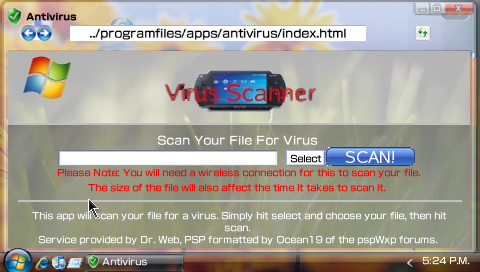

System security
PspWvista has a lot of security systems, obviously, is a group of .html, .swf, .js and images, this means for your PSP theres isn´t any risk but PspWvista has got a antivirus. Well, this isn´t a antivirus, is a file virus scanner. The antivirus send the file to a web, this web analize the file and gives to you the scan results.

For send any file to analize
Press select for select the archive that you want to scan for viruses. Press SCAN and the program will start to send the file to the antivirus server.
Related tasks
| View a list of known bugs | |
| Go to help index |